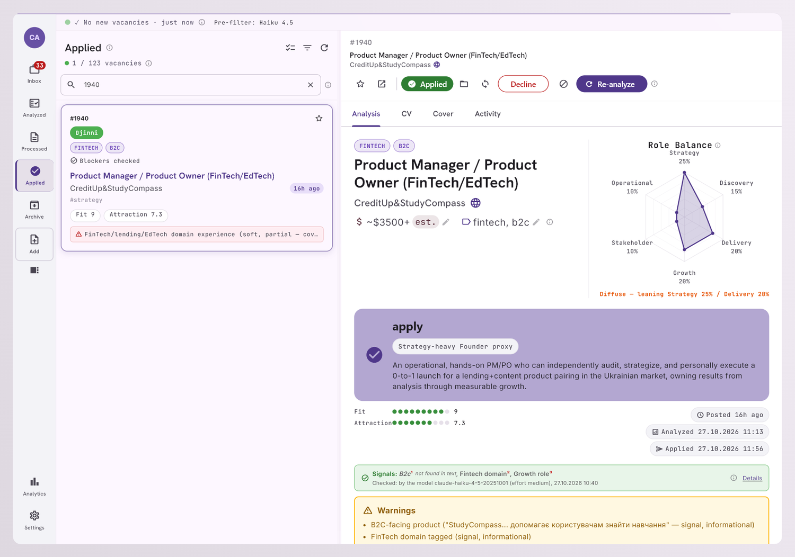

So decide first. Write second. →
to tailor one CV, before you know if you have a shot.
Weeks of effort. No result guaranteed.
First impression anchors the decision.
After the effort is already spent.
Some should never be submitted.
Real case: I rated a vacancy 10. The system said 4. One hidden requirement, missed on first read.
Nothing is written until there is a clear go / no-go.
Pulled in by RSS or pasted. Lands in the inbox.
A small model flags obvious non-fits.
Real pain, hidden barriers, fit score.
Built from real experience, self-reviewed.
You decide twice: apply or skip, and approve or reject the CV.
Fit score, North Star, barriers and a plain recommendation.

A vacancy that cannot fit never gets a real AI call.
~43 mixed steps became a handful of real AI decisions.
It never applies on its own. Two calls are yours.
vacancies in
analysed
tailored CVs
applications sent
About $0.32 per vacancy, fetch to cover letter (measured on one model generation; it moves as models and prices change). A snapshot since June.
The full brief has the decisions, the pipeline and the unit economics.